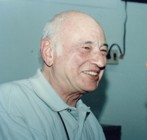
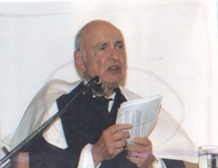
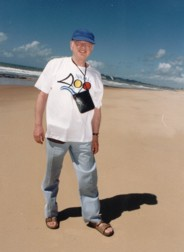

Ecce Homo! Aí está um dos expoentes mais expressivos do pensamento mundial contemporâneo. Eis o homem que quer, deseja e provoca, sem trégua, o reencontro entre ciência e humanismo. Eis o homem cujas idéias representam uma sintése aberta, mas ao mesmo tempo radical, a respeito do papel social e ético do conhecimento diante da agonia planetária.
Com uma produção científica polêmica, mas indiscutivelmente de repercussão e reconhecimento internacionais, Edgar Morin, nascido a 8 de julho de 1921, filho do Sr. Vidal e da bela Luna, tem dificuldade de se definir por uma área específica do conhecimento. Pudera! Essa dificuldade está marcada já na sua nascença e emerge na infância quando o pequeno Edgar precisa dizer qual sua origem, e mais precisamente, de onde viera seu pai - 'Da Salônica'. "Então é grego?" Perguntavam. -'Não, ele era de origem espanhola...' "Então é espanhol?" - 'Não...' tentava explicar Edgar que foi consecutivamente e simultaneamente, chamado de 'Bebeco' e 'Minou' por seu pai, depois de Edgar Nahoum Morin, e finalmente Edgar Morin.
É possível atribuir um pertencimento particular e unitário a Edgar Morin? Certamente não.
Edgar MorinEle é mais propriamente, como por vezes enuncia, um contrabandista de saberes, um artesão sem patente registrada, porque transita livremente por entre as arbitrárias divisões entre ciências da vida, do mundo físico e do homem. Quer rejuntar o que o pensamento fragmentado da super-especialização disciplinar fraturou, e é movido durante toda sua vida por vários 'demônios', mas também por uma mesma obsessão, um mesmo apelo intelectual, uma mesma razão apaixonada: a reforma do pensamento. Alerta porém para o perigo das generalizações extremas, e no caminho de Adorno e Gödel reafirma que "a totalidade é a não verdade" e que a complexidade é movida pela dinâmica da implenitude.
Sem abrir mão da disciplina intelectual e do rigor, Edgar Morin hipotetisa a tragédia do inacabamento da cultura, do sujeito, das idéias, do conhecimento. Daí porque, as verdades absolutas e as explicações finalistas são rigorosamente questionadas e discutidas na magnitude de uma obra aberta que abarca desde uma reflexão matricial acerca do método, até títulos considerados como sociologia, antropologia, política, escritos de conjuntura, livros sócio-auto-biográficos, romances, cinema e imaginário, cultura de massa.
Como o legendário deus Sísifo, Edgar Morin se atribuiu a missão (ou o castigo?) de, corajosamente, fazer rolar as diversas pedras do conhecimento, montanha acima, buscando religar saberes, mesmo que, como Sísifo, tenha visto tantas vezes as pedras caírem.
Cerimônia de outorgação do título Honoris Causa na UFRN em 1999Aqui está um pensador inclassificável, múltiplo, um eterno estudante, um intelectual que o jornal "La libre Belgique" chamou de 'um humanista sem fronteiras'. Um intelectual que politiza o conhecimento, um homem para quem só pode haver ciência com consciência. Um pensador que expõe suas incertezas, acredita na boa utopia, na reforma da universidade e do ensino fundamental, que defende publicamente suas polêmicas posições diante dos conflitos e das guerras, que se rende à democracia do debate para rever suas posições e argumentos, porque se opõe frontalmente à polícia do pensamento. Um intelectual que lança as bases para uma ética planetária que se inicia a partir da ética individual, uma auto-ética. Um homem que não se esconde nas palavras, mas que se expõe perigosamente por meio delas: "a auto-ética", dirá no livro Meus Demônios, "exige-me que não dissimule a subjetividade nos meus escritos, que não me arvore em proprietário da verdade objetiva, que deixe que o leitor me veja, incluindo as fraquezas e mesquinharias, mesmo correndo o risco de dar aos meus adversários motivos para me ridicularizarem". Um intelectual a quem incomoda o culto a sua personalidade, ainda que, por vezes, não o consiga conter. "Faço um esforço constante", diz, "para não me por num pedestal... porque a estátua exterior, a que se mostra aos outros, vem da estátua interior, daquela que, inconscientemente, se esculpe para si".
Edgar Morin na Praia de Ponta Negra - Natal/RNSem uma bússola que indica uma direção pré-definida, esse sábio moderno se torna o caminhante do poeta Machado, recusa a ortodoxia, qualquer que seja ela, empreende ao longo de sua vida uma Odisséia do pensamneto. Como Ulisses, é ferido algumas vezes na sua caminhada. Mas, sua cicatriz, não se encontrando na perna, aloja-se nos porões de sua alma e reabre-se a cada vez que assiste às atrocidades provocadas pela tecno-política do pensamento. Como Ulisses que se transveste de nativo ao chegar ao país dos feáceos, ele sabe transitar pelas diversas searas do conhecimento e, sobretudo, matizar a relação entre amor, poesia e sabedoria.
Trechos da saudação feita a Edgar Morin pela Dra. Maria da Conceição Xavier de Almeida, na cerimônia da entrega do título de Doutor Honoris Causa, outorgado pela Universidade Federal do Rio Grande do Norte em junho de 1999.
Grupo de Estudos da Complexidade/GRECOM
Centro de Ciências Sociais Aplicadas
Programa de Pós-Graduação em Educação
Contato: +55 (84) 3215-3525/ TeleFax: +55 (84) 3211-9218
Email: calmeida17@hotmail.com
Coordenadora do Grecom: Maria da Conceição de Almeida